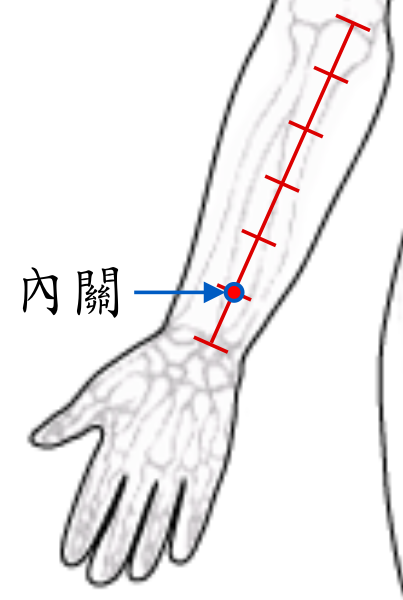

【穴位名稱】: 內關 (PC6)

【治療症狀】: 心悸 心浮氣躁 心絞痛 無脈癥 心動過速 高血壓 低血壓 真心痛 心房纖顫 心律不齊 冠心病 貧血 血栓閉塞性脈管炎 風濕性心臟病 膽結石 肚子痛 胃痙攣 膈肌痙攣(打嗝) 胃灼熱 胃病胃痛 胃酸過多 消化不良 飲食過度 噁心想吐 嘔吐 食道狹窄 幽門梗阻 胃、十二指腸潰瘍 胃下垂 急性腸胃炎 腸梗阻、腸套疊 膽囊炎 氣喘 哮 陽萎 月經不調 經痛 閉經 不孕症 難產 胎衣不下 乳房疼痛 乳炎、乳癱 容易焦躁 失眠 不易入睡 抑鬱 神經衰弱 癲癇 小兒驚厥 高血壓腦病 腦溢血(有昏迷過程) 蜘蛛網膜下腔出血 肋間神經痛 雷諾氏病→末端血液循環差 紅斑性肢痛 落枕 手痛 手脹_手麻 臂痛 膝蓋疼痛 胸口悶 胸痛 肋膜炎 肋痛 蕁麻疹 頭痛 全身倦怠 容易疲累 夜間盜汗 眩暈 發熱 癲癇
【取穴位置】: 前臂掌側，腕橫紋上2吋，掌長肌腱與橈側腕屈肌腱之間，當曲澤與大陵的連線上。《靈樞·經脈》：「去腕二寸，出於兩筋之間」；《循經考穴編》：「大陵後二寸，正對外關。」
【針刺方法】: 直刺0.5～1吋。注意避免損傷正中神經幹 (尤其是作穴位注射時)。艾炷灸5～7壯，艾條溫灸10～15分鐘。